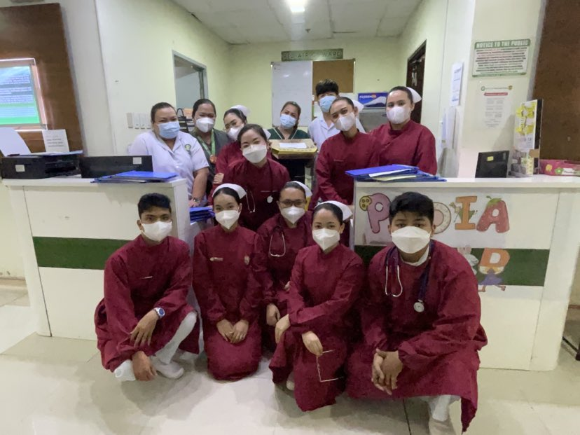
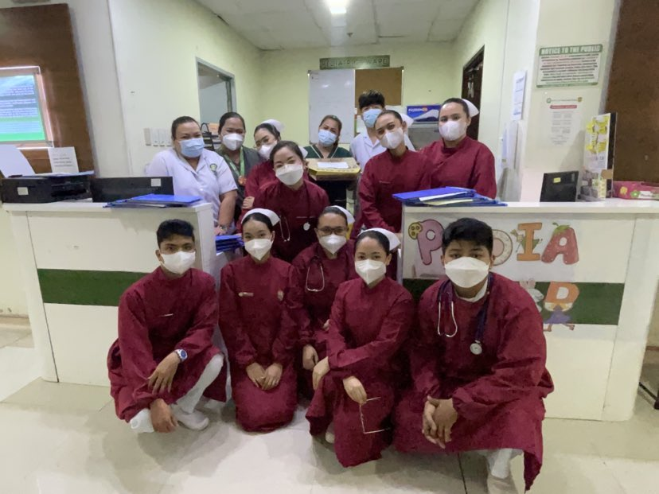

My name is Nicole Loise T. Alejandro, and I am currently a fourth-year nursing student at the University of Perpetual Help System Dalta, pursuing a Bachelor of Science in Nursing.
I have developed a keen interest in specializing in critical care settings, including the ICU, emergency department, and operating room.
Throughout my studies, I have cultivated a strong passion for providing compassionate and high-quality care to patients in their most vulnerable moments. I believe that nursing is not just a profession but a calling to make a meaningful difference in the lives of others.
My philosophy centers on the importance of empathy, teamwork, and continuous learning, as I strive to enhance my skills and knowledge to better serve my future patients. I am excited about the journey ahead and the opportunities to grow as a healthcare professional.
 



My rotation in the operating room has been a significant experience in my nursing journey, allowing me to enhance my skills and deepen my understanding of patient care. Each surgical case is a unique learning opportunity, and I feel a profound sense of purpose when I’m in the OR, aspiring to become a doctor one day.
Throughout my duties, I have witnessed the full spectrum of life—from childbirth to pediatrics and geriatrics, all the way to end-of-life care in the ICU. These experiences have reinforced my commitment to holistic patient care and the fulfillment I gain from helping others.
Despite facing challenges and moments of burnout, I am driven by my passion for medicine and my desire to make a difference in people's lives. This journey is demanding, but the opportunity to care for others motivates me to strive for excellence as I work toward my goal of becoming a physician